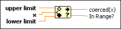

In Range and Coerce Function
Owning Palette: Comparison Functions
Requires: Base Development System
Determines whether x falls within a range specified by the upper limit and lower limit inputs and optionally coerces the value to fall within the range. The function performs the coercion only in Compare Elements mode. This function accepts time stamp values if all inputs are time stamp values. You can change the comparison mode of this function.
The connector pane displays the default data types for this polymorphic function.

 Add to the block diagram Add to the block diagram |
Find on the palette |